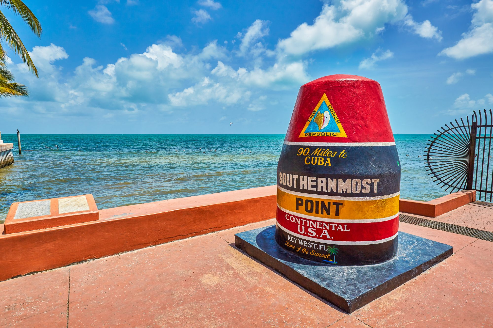
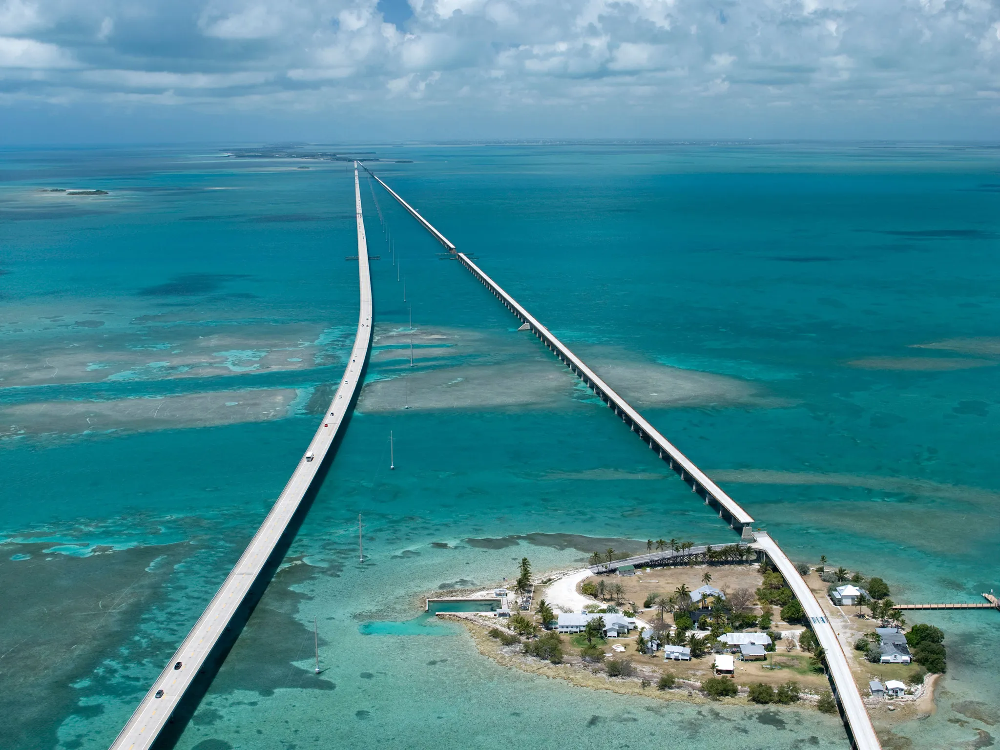
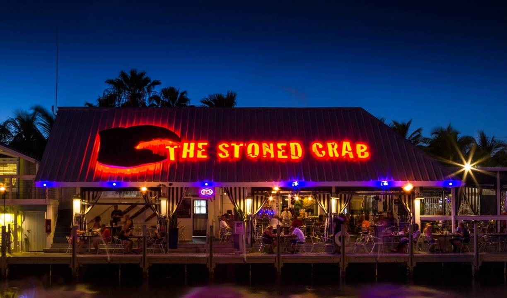
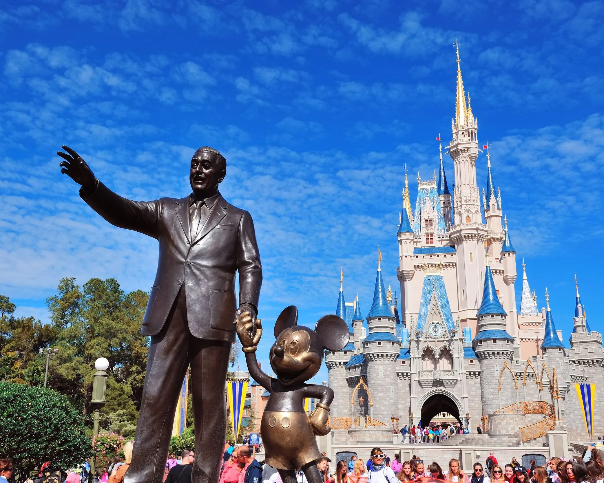
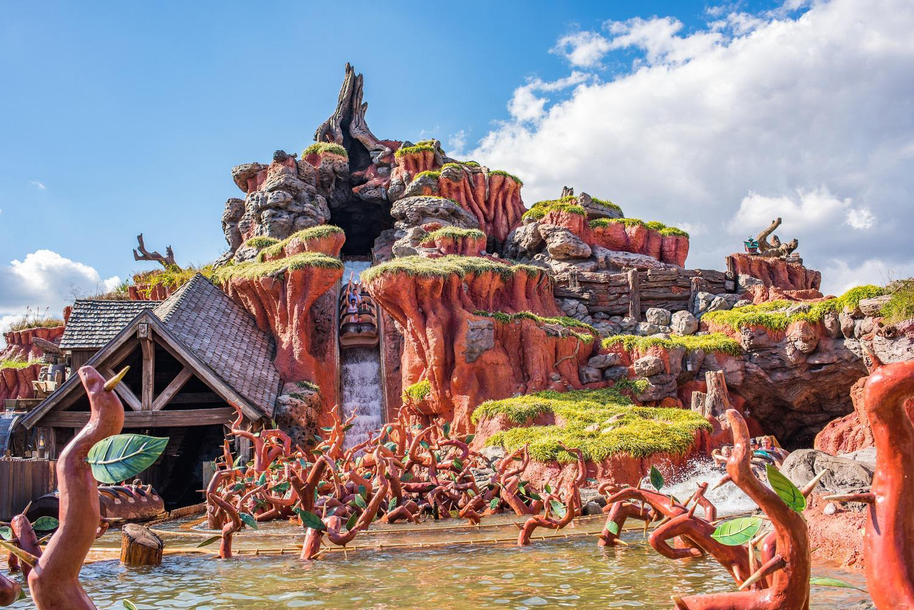

In 2010, my family and I visited Key West, Florida, the southernmost point of the United States.
As seen in the picture, the buoy was a great place to visit as to showcase the lowest latitude land point in U.S.
Also cannot leave out the great local food too.



Disney World
Both in 2008 and 2010, my family and I visited Disney World located in Orlando, Florida. In 2010, it was part of the same trip to Key West and it was awesome.
My favorite part would have to be in Magic Kingdom, such as Space Mountain, Splash Mountain, and the churros.


San Diego
In 2015, my family and I visited San Diego, California. We traveled by airplane and it was awesome to view all the different landmarks through the west such as the
the Rocky Mountains. The water was definitely colder than Flordia waters but I digress.